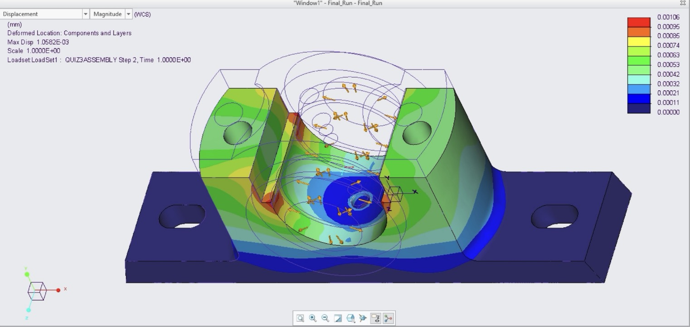
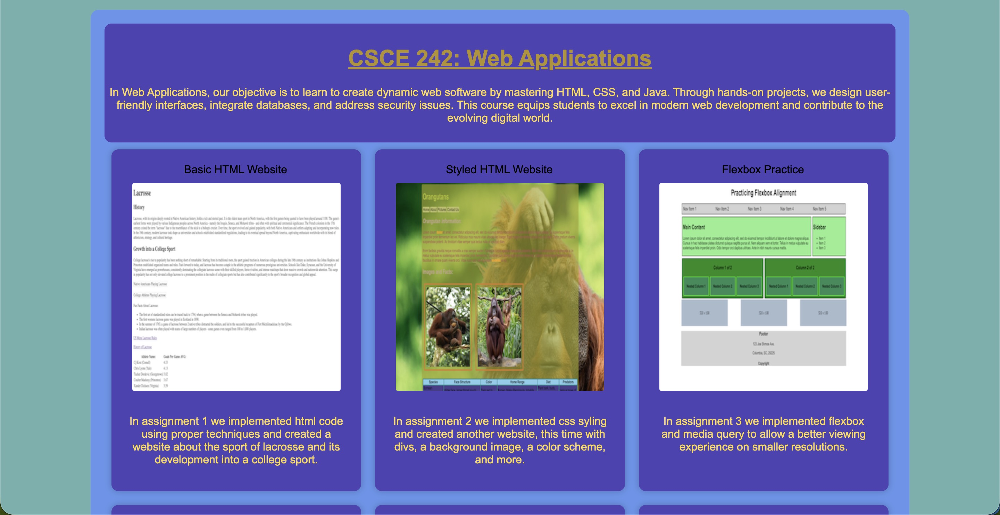

Shortly after starting as a CAD Intern for Walker White Inc., my first tasks were to trace plumbing diagrams, color-code them, and do rough material and cost estimates. I thought it was simple enough, and after a while, everything began to blur into shapes, icons, flat numbers glowing on the monitor in front of me as I chugged along. Early on, fitting pieces together seemed enough - like solving a cold maze with fixed rules and checking my math at the end. One day, I was going back through my work to make sure a waste and water line were not running into each other. I realized something as I was clicking through the building from a person's point of view. I realized that the facilities that I'm helping create will be used by millions of people, if not more. A family could be visiting their loved one in a hospital room, or disease research being conducted in a DHEC lab. I realized the plenum spaces and corridors weren't just where pipes and ducts got shoved to be “out of sight, out of mind”. They were the place where these things go for safety and neatness - people notice when a piece of pipe is sticking out of an otherwise clean hallway. Fixing conflicts in plans became less about simply accuracy and more about what a person might think when they moved through those rooms or inspected anything. I learned that the smaller details end up carrying the most weight for the end user. This experience demonstrated that the precision of the layout goes hand in hand with the reliability of the final product, and by being considerate of the technical things, I am showing my commitment to whoever will use something I've helped create in the future.
This thinking showed up again in CSCE 490/492: Capstone Computing Project, Professor Vidal, Fall 2025/Spring 2026, where I am creating a video game in Unity. It is not only about writing code, but the user experience is the priority. What takes shape is how someone feels as they move through and use each part of what I create. Just like a poorly placed vent could ruin the comfort of a room, a slow control or an unclear mechanic might ruin the fun for a new player. This mindset started during my time spent in CSCE 242: Web Applications, Professor Plante, Fall 2023, where I used coding and styling techniques to create intuitive webpages, while making the code as easy to follow as possible. The hard part wasn't writing the code needed to create a parallax effect; it was deciding where on the site the effect should be or which image should have the effect. This was something that only the user could know. I often found myself asking if a design choice would make sense to someone unfamiliar, and not just me. I quickly learned that the technical knowledge and coding background are only part of software design. How a person moves through a website began shaping my choices, and what seemed natural mattered just as much as what caused confusion.
A switch flipped inside me as I noticed patterns in many of the things I've done on my academic journey. Piece by piece, the understanding grew through doing many unrelated tasks. Building heating and plumbing designs on screen somehow looped into making websites and again into video game design. The one truth that stays constant is that meaning arrives after someone else touched what I made. Experiences started to make sense in the way they hadn't before. Blueprints and drawings not only documented, but they also decided how a person would walk, pause, and live inside a room or hallway. Code in websites counted less; what really counted was whether someone felt guided without effort. In game design, the mechanics were meaningless if they impeded how naturally a player could step into a scene.
It was never just lines on a screen. It was always frameworks that shaped a path someone would follow without even noticing. Every decision has weight, knowing that behind glass or on paper, eyes would be meeting them later. Finding a balance between prior expertise and basic intuition changed how I see daily tasks, and my focus has shifted to the human experience rather than mere completion of a task.
Images
During an interview for a full time position with Walker White, I had the opportunity to tour the construction site of the new football stadium, which was a great chance to see the real-world application of the work I had been doing as an intern. It was exciting to see how the designs and plans I had worked on were coming to life, and it reinforced my understanding of the importance of attention to detail in construction projects.

This is a screenshot of a stress analysis project for a mechanical engineering class I took here. It was a great opportunity to implement engineering and CAD skills to analyze the stress distribution in a mechanical component while building on my modeling and software skills.
Artifacts
Within the Classroom
Web Applications Final Project

This project reflects how I applied web development techniques to create multiple in-class projects, compiled all together onto one central webpage. The repository shows my code, and the webpage itself shows how I made design choices to make the user experience as intuitive as possible.
This project showcases my work in the capstone design course, where I applied my knowledge of software design and user experience to create a video game in Unity. The repository contains the code for the game, and the image shows a screenshot of the game in action, demonstrating how I focused on creating an intuitive and enjoyable user experience.
This is a photo I took of some comments I made to a section of plumbing design for the DHEC laboratory during my time interning at Walker White. The design was already made, but I added comments to the blueprints to make it easier for the construction workers to understand how the pipes should be installed. This experience showed me how important it is to consider the human experience when creating designs, as even small details can make a big difference in how easily someone can understand and follow instructions.
In another project during my internship at Walker White, I was tasked with creating a drawing for an office remodel. I was asked to make a simple layout of the office space that added more desks, but I took it a step further by adding annotations and design elements to make it easier for new eyes to understand the layout and visualize how the space would look after the remodel. This experience reinforced the importance of considering the human experience in design, as even small details can make a big difference in how easily someone can understand and visualize a design.